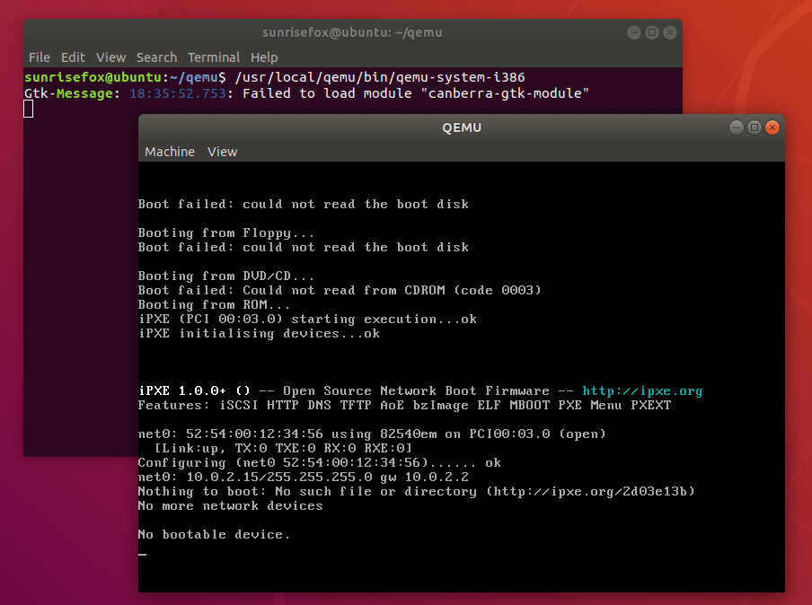

请再次确认已经完成了 安装依赖。
预先获取好的源代码已经附在实验工具中 qemu.zip 的 qemu 文件夹中了。如果想使用最新版本的 QEMU，也可以执行：
git clone https://github.com/mit-pdos/6.828-qemu.git qemu
注意！
该过程 不能 在 Windows 目录下完成！ 如果使用 WSL，务必注意不要将其放在 /mnt/ 目录下；如果使用 VMware，务必注意不要将其放在 /mnt/hgfs 目录下。
cd qemu # 切换到源代码目录
./configure --disable-kvm --disable-werror --target-list="i386-softmmu x86_64-softmmu" --prefix=/usr/local/qemu
# ↑ 其中，--disable-werror 是禁止将警告视为错误
# ↑ 指定 --target-list 即指定我们需要的模块，留空会大大增加依赖数和编译时间
# ↑ 指定 --prefix 是指定 QEMU 的安装目录
sudo make
# ↑ 注意该 makefile 似乎不支持多核心编译，务必不要使用 -j<n>
# ↑ 该过程耗时较长且可能会失败，
# ↑ 如果结束时出现 `...failed, nothing to be done for ..., stop`
# ↑ 类似的提示说明构建失败了，务必检查一下之前操作是否有遗漏再重新执行
sudo make install
如果没有错误提示，尝试执行
/usr/local/qemu/bin/qemu-system-i386
# ↑ 如果没有修改安装路径，即，留空或指定了 /usr/local/qemu
最终会出现这样的提示：

恭喜，一切顺利，可以继续配置了~